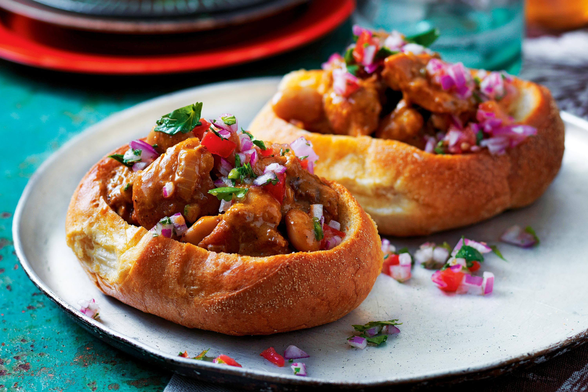

Bunny chow

Description
This simple, yet very delicious dish, consists of a hollowed-out loaf of bread filled with Durban curry. Bunny chow's origin dates back to the arrival of migrant Indian workers who have since settled throughout South Africa. Thanks to the culinary influence of Indian South Africans, today bunny chow has been adopted nationwide and is enjoyed in many different variations.
Ingredients
The following ingredients are necessary:
- 400 g chicken breast cut in bite-sized pieces
- 0.5 cup canola oil
- 3 curry leaves
- 1 tsp minced ginger
- 2 teaspoons minced garlic
- 2 tbsp curry powder
- 1 medium onion diced
- 2 medium tomatoes diced
- 1 cinnamon stick
- 1.5 teaspoon paprika
- 3 green cardamom pods lightly crushed
- 250 g potatoes cleaned and cut into cubes
- 35 g chickpeas rinsed and drained
- 0.5 teaspoon cayenne pepper
- 1.5 cup chicken broth
- Salt and pepper to taste
Steps
Steps to create recipe
- When ready to cook, heat up large Sauce- pan with oil, and add onions, garlic,ginger, cinnamon stick, curry leaves, cardamom pods and curry powder, stir occasionally for about 2-3 minutes until onions is translucent.
- Add tomatoes followed by chicken, stir and sauté for about 2-3 more minutes. Add chicken stock/ water if necessary to prevent any burns.
- Next add chickpeas, potatoes and chicken broth , about 1 1 1/2 cup , add more as needed. Bring to a boil and let it simmer until sauce thickens, it might take about 25 minutes or more.
- Adjust for salt, pepper and stew consistency.
Nice, now it's time to dig in.

Enjoy!
To see our other delicious recipes click here.
Note: This recipe was sourced from the following website.